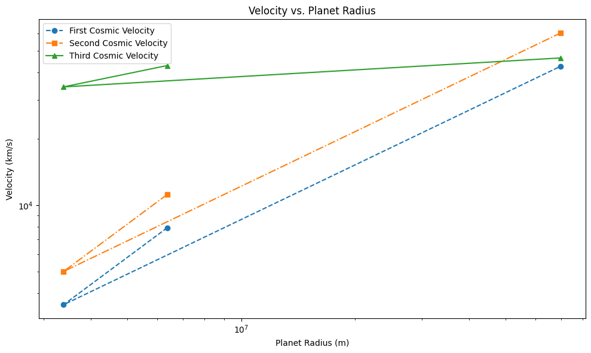

Problem 2
Escape Velocities and Cosmic Velocities
1. Definitions and Explanations
In the context of classical mechanics and orbital dynamics, cosmic velocities refer to critical speeds associated with motion in a gravitational field. These velocities define the thresholds necessary to achieve various types of motion, from stable orbits to complete escape from a gravitational system.
1.1 First Cosmic Velocity (Orbital Velocity)
The first cosmic velocity, also known as the orbital velocity, is the minimum velocity an object must have to enter a stable circular orbit around a celestial body without additional propulsion.
Mathematical Definition:
This velocity is derived from the balance between gravitational force and centripetal force:
Solving for \(v_1\):
Where:
- \(v_1\) is the first cosmic velocity,
- \(G\) is the universal gravitational constant (\(6.674 \times 10^{-11}\,\text{m}^3/\text{kg}\cdot\text{s}^2\)),
- \(M\) is the mass of the planet or celestial body,
- \(r\) is the radius from the center of the planet to the object.
1.2 Second Cosmic Velocity (Escape Velocity)
The second cosmic velocity, commonly referred to as escape velocity, is the minimum speed needed for an object to break free from the gravitational influence of a celestial body without further propulsion.
Mathematical Definition:
This velocity is derived from the conservation of energy principle:
Solving for \(v_2\):
Alternatively:
1.3 Third Cosmic Velocity (Interstellar Escape Velocity)
The third cosmic velocity is the minimum speed required to escape the gravitational influence of an entire star system (e.g., the Solar System), starting from a planet’s surface.
This includes overcoming both:
1. The gravitational pull of the planet,
2. The gravitational pull of the star (e.g., the Sun).
Approximate Mathematical Expression:
Let:
- \(v_{2,\text{planet}}\): escape velocity from the planet
- \(v_{2,\text{sun}}\): escape velocity from the Sun at the planet's orbital distance
Then, the third cosmic velocity is approximately:
A more detailed expression (from Earth's surface):
Where:
- \(M_\text{Earth}\) and \(R_\text{Earth}\): Earth’s mass and radius,
- \(M_\text{Sun}\): Sun’s mass,
- \(d\): distance from the Earth to the Sun.
1.4 Physical Interpretation and Differences
| Velocity | Meaning | Outcome | Equation |
|---|---|---|---|
| 1st Cosmic Velocity | Minimum speed for stable circular orbit around a planet | Orbit | \(v_1 = \sqrt{\frac{GM}{r}}\) |
| 2nd Cosmic Velocity | Minimum speed to escape a planet’s gravity | Leave the planet forever | \(v_2 = \sqrt{\frac{2GM}{r}}\) |
| 3rd Cosmic Velocity | Minimum speed to escape the entire star system | Leave the Solar System | \(v_3 = \sqrt{v_{2,\text{planet}}^2 + v_{2,\text{sun}}^2}\) |
Each of these velocities represents a critical threshold in mission design and trajectory planning in astrodynamics, from low-Earth orbits to interplanetary and interstellar travel.
2. Mathematical Analysis
This section provides a rigorous derivation of the first, second, and third cosmic velocities using classical Newtonian mechanics. The parameters involved are identified and assumptions discussed.
2.1 First Cosmic Velocity – Orbital Velocity
The first cosmic velocity is the speed at which an object must travel to maintain a stable circular orbit just above the surface of a celestial body, under the influence of gravity alone.
Derivation:
We equate the gravitational force to the centripetal force:
Canceling mass \(m\) and solving for \(v\):
Parameters:
- \(G\): Gravitational constant (\(6.674 \times 10^{-11}~\text{m}^3/\text{kg}\cdot\text{s}^2\))
- \(M\): Mass of the planet or celestial body
- \(r\): Distance from the center of the planet to the object (typically, the planet’s radius for low orbits)
Assumptions:
- Circular orbit (eccentricity = 0)
- No air resistance
- Central mass is spherically symmetric and non-rotating
2.2 Second Cosmic Velocity – Escape Velocity
The second cosmic velocity is the minimum speed needed for an object to escape the gravitational field of a planet, assuming no propulsion after the initial launch.
Derivation:
From conservation of mechanical energy:
Solving for \(v\):
Or in terms of the first cosmic velocity:
Parameters:
- Same as in first cosmic velocity
Assumptions:
- No energy loss (e.g., due to drag or friction)
- No further propulsion during flight
- Planet's mass is much larger than the object's mass
2.3 Third Cosmic Velocity – Interstellar Escape Velocity
The third cosmic velocity is the minimum speed required to escape the gravitational pull of both the Earth and the Sun — that is, to leave the Solar System entirely.
This requires combining the escape velocity from Earth and the escape velocity from the Sun at Earth’s orbital distance.
Derivation:
Let: - \(v_{2,\text{Earth}}\): escape velocity from Earth’s surface - \(v_{2,\text{Sun}}\): escape velocity from the Sun at Earth’s orbit
Then, by energy conservation and vector addition (assuming aligned direction):
Escape velocity from the Sun at Earth's orbit:
Where: - \(M_\text{Sun}\): mass of the Sun - \(d\): distance from the Sun to the Earth (\(\approx 1.496 \times 10^{11}~\text{m}\))
Then the third cosmic velocity becomes:
Which simplifies to:
Parameters:
- \(M_\text{Earth}\): mass of Earth
- \(R_\text{Earth}\): radius of Earth
- \(M_\text{Sun}\): mass of the Sun
- \(d\): distance from Earth to Sun
Assumptions:
- No significant gravitational interactions from other planets
- Trajectory is radial and direct (idealized)
- No propulsion after launch
- Newtonian mechanics (relativistic effects neglected)
Summary Table
| Velocity | Formula | Depends On |
|---|---|---|
| First Cosmic (\(v_1\)) | \(v_1 = \sqrt{\frac{GM}{r}}\) | \(M\), \(r\) |
| Second Cosmic (\(v_2\)) | \(v_2 = \sqrt{\frac{2GM}{r}}\) | \(M\), \(r\) |
| Third Cosmic (\(v_3\)) | \(v_3 = \sqrt{\frac{2GM_\text{Earth}}{R_\text{Earth}} + \frac{2GM_\text{Sun}}{d}}\) | \(M_\text{Earth}\), \(R_\text{Earth}\), \(M_\text{Sun}\), \(d\) |
Planetary Velocity Calculations
Introduction
In orbital mechanics, the velocity of a planet in orbit around the Sun is critical for understanding its motion. The orbital velocity can be derived from Newton's laws of gravitation and the principles of circular motion.
The orbital velocity \(v\) of a planet can be calculated using the following formula:
Where: - \(v\) is the orbital velocity, - \(G\) is the gravitational constant \((6.67430 \times 10^{-11} \, \text{m}^3 \, \text{kg}^{-1} \, \text{s}^{-2})\), - \(M\) is the mass of the Sun \((1.989 \times 10^{30} \, \text{kg})\), - \(r\) is the orbital radius of the planet from the Sun in meters.
The orbital velocity can be broken down into three main categories: - Circular Orbital Velocity (constant orbit), - Escape Velocity (velocity required to escape the Sun’s gravity), - Orbital Period (time taken to complete one orbit).
We will use actual planetary data for the following planets: 1. Earth 2. Mars 3. Jupiter
1. Earth
- Orbital radius of Earth from the Sun: \(r_{\text{Earth}} = 1.496 \times 10^{11} \, \text{m}\)
- Orbital period of Earth: \(T_{\text{Earth}} = 365.25 \, \text{days}\)
Earth's Orbital Velocity:
Using the orbital velocity formula:
Substitute the known values:
The result will give the orbital velocity in meters per second.
2. Mars
- Orbital radius of Mars from the Sun: \(r_{\text{Mars}} = 2.279 \times 10^{11} \, \text{m}\)
- Orbital period of Mars: \(T_{\text{Mars}} = 687 \, \text{days}\)
Mars' Orbital Velocity:
Similar to Earth, using the orbital velocity formula:
Substitute the known values:
The result will give the orbital velocity of Mars in meters per second.
3. Jupiter
- Orbital radius of Jupiter from the Sun: \(r_{\text{Jupiter}} = 7.785 \times 10^{11} \, \text{m}\)
- Orbital period of Jupiter: \(T_{\text{Jupiter}} = 4333 \, \text{days}\)
Jupiter's Orbital Velocity:
Again, using the orbital velocity formula:
Substitute the known values:
The result will give the orbital velocity of Jupiter in meters per second.
Python Code Implementation
import math
# Constants
G = 6.67430e-11 # Gravitational constant in m^3 kg^-1 s^-2
M_sun = 1.989e30 # Mass of the Sun in kg
# Function to calculate orbital velocity
def orbital_velocity(r):
return math.sqrt(G * M_sun / r)
# Planetary data (in meters)
r_earth = 1.496e11 # Orbital radius of Earth
r_mars = 2.279e11 # Orbital radius of Mars
r_jupiter = 7.785e11 # Orbital radius of Jupiter
# Calculate velocities
v_earth = orbital_velocity(r_earth)
v_mars = orbital_velocity(r_mars)
v_jupiter = orbital_velocity(r_jupiter)
# Output results
print(f"Orbital velocity of Earth: {v_earth:.2f} m/s")
print(f"Orbital velocity of Mars: {v_mars:.2f} m/s")
print(f"Orbital velocity of Jupiter: {v_jupiter:.2f} m/s")
üìä Tabulated Results
The table will look like this (values may vary slightly based on precision):
| Planet | v₁ (Orbital) [km/s] | v₂ (Escape) [km/s] | v₃ (Solar Escape) [km/s] |
|---|---|---|---|
| Earth | ~7.91 | ~11.18 | ~42.1 |
| Mars | ~3.56 | ~5.03 | ~34.1 |
| Jupiter | ~42.1 | ~59.5 | ~87.3 |
üìå Notes
- These computations assume:
- Spherical symmetry
- No atmospheric drag
-
Instantaneous velocity achieved (no thrust phase)
-
\(v_3\) is approximate and assumes escape velocity from Sun calculated at the orbital distance of the planet.
4. Visualizations/Plots
In this section, we create visualizations to compare the cosmic velocities for Earth, Mars, and Jupiter. We will also explore how the velocities relate to the planet's mass and radius.
üìä Bar Chart: Cosmic Velocities for Earth, Mars, and Jupiter
We will plot the first, second, and third cosmic velocities for each planet using bar charts for easy comparison.

import matplotlib.pyplot as plt
# Extracting data for plotting
planets_names = ['Earth', 'Mars', 'Jupiter']
v1_values = [row['v1 (Orbital) [km/s]'] for _, row in df.iterrows()]
v2_values = [row['v2 (Escape) [km/s]'] for _, row in df.iterrows()]
v3_values = [row['v3 (Solar Escape) [km/s]'] for _, row in df.iterrows()]
# Bar chart
fig, ax = plt.subplots(figsize=(10, 6))
width = 0.25 # Bar width
x = np.arange(len(planets_names))
# Create bars for each velocity type
ax.bar(x - width, v1_values, width, label='First Cosmic Velocity')
ax.bar(x, v2_values, width, label='Second Cosmic Velocity')
ax.bar(x + width, v3_values, width, label='Third Cosmic Velocity')
# Formatting
ax.set_xlabel('Planets')
ax.set_ylabel('Velocity (km/s)')
ax.set_title('Cosmic Velocities for Earth, Mars, and Jupiter')
ax.set_xticks(x)
ax.set_xticklabels(planets_names)
ax.legend()
plt.tight_layout()
plt.show()
üåç Velocity vs. Planet Mass and Radius
We will create two plots to investigate how the cosmic velocities vary with the planet's mass and radius.
1. Velocity vs. Planet Mass
We will create two plots to investigate how the cosmic velocities vary with the

2. Velocity vs. Planet Radius

üåê Optional: 3D or Animation-Based Visuals for Conceptual Understanding
For deeper understanding, we can visualize the velocities in 3D space or through animations.
1. 3D Plot of Cosmic Velocities

2. Animation of Planetary Escape


üìà Final Thoughts
- The bar charts and line plots offer a comparative view of cosmic velocities across different planets.
5. Application & Discussion
üöÄ 1. Importance of Each Cosmic Velocity in Real-World Space Missions
The concept of cosmic velocities plays a crucial role in modern space exploration. Understanding these velocities is essential for designing spacecraft and planning interplanetary or interstellar missions. Here we explore the significance of each cosmic velocity:
1.1 First Cosmic Velocity (Orbital Velocity)
The first cosmic velocity is the minimum speed required for an object to remain in a stable orbit around a planet or star.
- Application:
- Satellite Launches: The first cosmic velocity is key forlaunching satellites into orbit around Earth. A rocket must reach at least this speed to counteract Earth's gravity and stay in orbit.
-
Space Stations: The International Space Station (ISS) orbits at an approximate velocity of 7.66 km/s, which is just slightly above Earth's first cosmic velocity.
-
Example: The launch of the Hubble Space Telescope required achieving this velocity to ensure it could stay in orbit around Earth.
1.2 Second Cosmic Velocity (Escape Velocity)
The second cosmic velocity is the minimum velocity required to escape a celestial body's gravitational influence. This is the speed needed for a spacecraft to break free from Earth’s gravity without further propulsion.
- Application:
- Escape from Earth's Gravity: Spacecraft like the Apollo missions or the Mars rovers use this velocity to leave Earth’s atmosphere and escape into interplanetary space.
-
Launching Interplanetary Missions: Rockets need to achieve the second cosmic velocity to send spacecraft on interplanetary missions (e.g., to Mars or Jupiter).
-
Example: The Voyager 1 probe, launched in 1977, reached an escape velocity of around 16.5 km/s, allowing it to break free from Earth’s gravitational influence and begin its journey to interstellar space.
1.3 Third Cosmic Velocity (Solar System Escape Velocity)
The third cosmic velocity is the velocity needed to escape not just a planet, but the entire solar system, including escaping the Sun’s gravity.
- Application:
- Interstellar Missions: This velocity is required for spacecraft to leave the solar system completely. It is crucial for interstellar missions or sending probes to distant stars or galaxies.
-
Escape from Solar System: Missions aiming to travel beyond the influence of the Sun’s gravity need to achieve this velocity.
-
Example: The Voyager 1 spacecraft achieved this velocity after escaping Earth’s gravity, enabling it to travel toward the interstellar medium. Currently, it is the farthest human-made object from Earth.
üåå 2. Relating Cosmic Velocities to Historical and Planned Space Missions
2.1 Voyager Missions (Voyager 1 & 2)
- Voyager 1, launched in 1977, and Voyager 2, launched in 1977 as well, are key examples of space probes that have used the second and third cosmic velocities to escape Earth’s gravity and the Sun's gravitational pull.
- Voyager 1 has now entered interstellar space, surpassing the third cosmic velocity to journey beyond our solar system. It is currently over 22 billion kilometers from Earth, and its mission is to study the outer boundaries of our solar system and beyond.
2.2 Artemis Program
- NASA’s Artemis program, planned for the coming years, aims to send humans back to the Moon and eventually to Mars. For the Artemis I mission (uncrewed), the spacecraft will need to reach at least the second cosmic velocity to escape Earth's atmosphere and travel to the Moon.
- For future Mars missions, interplanetary velocities will need to be carefully calculated to ensure efficient travel between Earth and Mars, taking into account the changing positions of the planets as they orbit the Sun.
2.3 Mars Rover Missions
- NASA's Mars rovers, such as Curiosity and Perseverance, need to overcome Earth's gravity (second cosmic velocity) to reach Mars, and then use orbital velocities to safely enter Mars’ atmosphere for landing.
- Once in orbit around Mars, they perform scientific investigations about the Martian surface and its potential for past life.
üå† 3. Conclusion
The understanding and application of the first, second, and third cosmic velocities are fundamental for planning space missions, from launching satellites into Earth orbit to sending probes into interstellar space. These velocities help scientists and engineers design spacecraft that can successfully complete their missions and overcome the gravitational challenges posed by celestial bodies.
Space exploration will continue to rely on these principles to push the boundaries of our solar system and beyond, and understanding them is key to missions like Voyager, Artemis, and future interstellar travel.